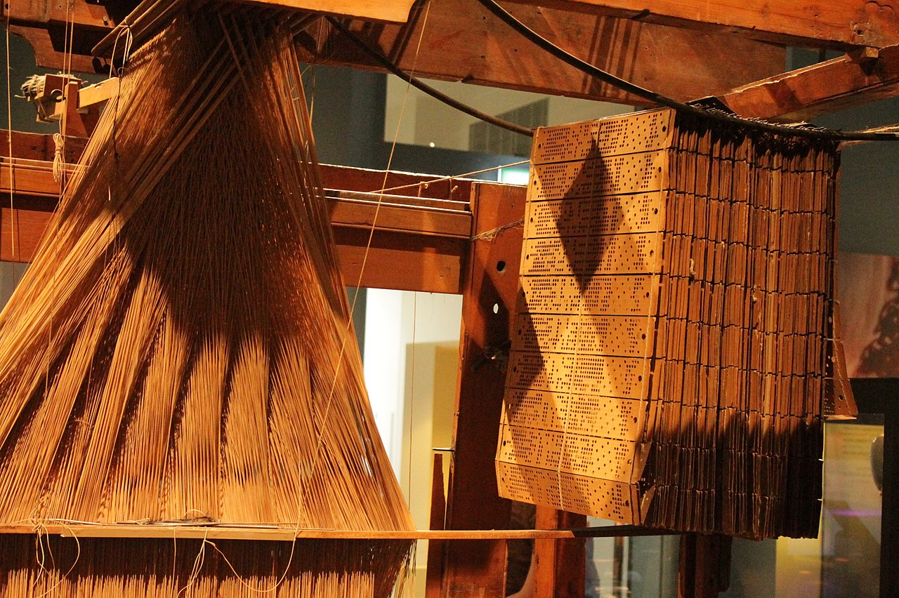
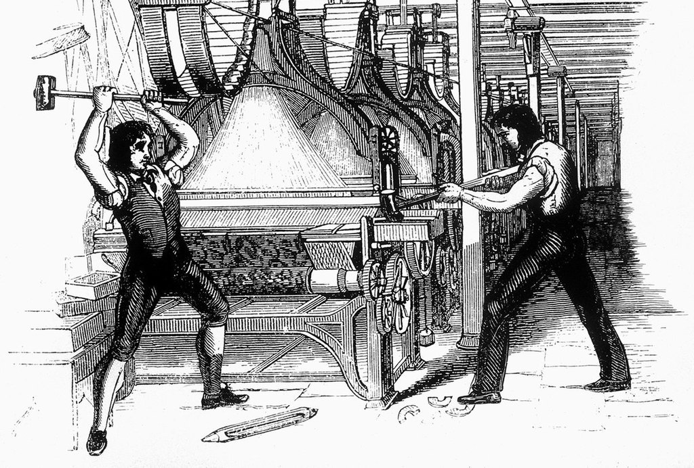

How do Computers Work?
An Introduction
There is undue mystery in the operation of computers. For some reason, digital technology is seen as magical or too advanced to be understood by the layperson. This is not true. Computers are glorified engines or plumbing systems - they're complicated, but anyone with some attention and effort can learn its principles and operations. To begin our understanding, we will begin at the heart of the machine and work our way outward.CPU - the heart of a computer
An example power reading from somewhere on a computer
chip, showing high and low signals over time.
The chip has many places where this electricity flows. There are many units in a CPU and each performs a specialized job, such as adding two numbers together or collecting data from somewhere else. At each of these places, the unit spends a duration of time listening to the electricity and performing its work. Because of these time-sensitive tasks, the whole system must be very tightly choreographed.
To synchronize everything, all parts of the chip listen to a clock which ticks off time at a very precise (and incredibly fast) rate. These ticks aren't used to measure periods of time, just to set a pace - so it's more like a metronome than a watch! This mentronome-clock is made by passing electricity through a quartz crystal, which causes the crystal to shake at a predictable speed. Every time the crystal completes an oscillation (the shake), each part of the chip knows to perform its next step and pass the electricity to the next unit in the system (this is done by re-broadcasting what it heard - a zero or a 1 - to the next person in the cpu pipe).

This is a very zoomed in picture of the inside of a intel 4004 chip - the first computer chip on the
market (thanks MIT for releasing this picture!). If you look closely, you can see all the little paths
the electricity must take, and the units where that electricity is processed.
So now we have a few basic ideas:
- Computers have a core called a CPU where all processing occurs
- CPUs operate with electricty passing along special routes
- These routes connect different electronic parts which do different jobs
- When the electricity is high, the computer considers it a 1
- When the electricity is low, the computer considers it a 0
- the whole system is synchronized with a highly accurate clock
The Early History of Computers

A punchard operated loom. Image via wikimedia
commons
{kind=link}

Luddites destroying the looms. Image via wikimedia
commons
{kind=link}
A central idea in computing theory is that information can be used to represent data or instructions - sort of like how the human voice can be used to describe something, or to tell someone what to do. All of the information in modern computers are stored in the format of zeroes and ones.
People sometimes make the mistake of assuming zeroes and ones (also known as binary) is somehow special. (psst, it's not!) The first computers actually used the numbers 0-9, and that history is a really useful tool for understanding how modern computers work. In fact, it was this early dependence on base 10 which killed the first computers before they had the chance to mature into a useful machine.

Babbage and Lovelace's Difference Engine. Image via wikimedia
commons
.jpg){kind=link}
This machine was so advanced, it was an early form of automation which replaced the occupational roles many skilled laborors. In 1811 those workers began burning the looms in protest, and became known as the luddites, which to this day is used as a term to mean someone who is against technological progress. The question of production, labor, and automation, have always been embedded within computing - even in its progenitor the loom.
The luddites launched the loom into public awareness - including the salons of the upper clases, where aristocratic scholars could meet and share ideas. Charles Babbage was one such elite. In the loom, he saw the potential to connect his understanding of engines and mathematics to make a mechanical device which could solve math problems. Rather than punchcards representing threads, they could instead be used to represent numbers and mathematical operations which the loom could then solve like an abacus. He called his device the Analytical Engine.
As Babbage worked on his mechanical designs, he recruited the young socialite Ada Lovelace to formulate how the punchcards would operate. Lovelace was a mathematical prodigy and the daughter of Lord Byron (Her mother suffering a falling out with Byron, insisted her daughter learn mathematics - the furthest discipline from poetry she could conceive of), and is now thought of as the first computer programmer.
The analytical engine was never built - the hand made parts were cumbersome and expensive and government financing ceased prior to the assembly of a prototype. Similar to the arabic numeral system we are familiar with, his machine was in base 10. This required a complicated gearing system with 10 settings for each digit. Although we find it easier to operate in the world with ten digits, it was a structural hurdle which fatally complicated the analyitcal engine's design.
Those needing to perform simple calculation continued to rely on abacuses, slide rules, and other such handheld tools which though simple proved reliable and easy to make. It wasn't for another century that attention would return to the general-purpose computer.
Computing the War
In 1930's Germany, Konrad Zuse built the first binary computer. Instead of focusing on a gearing system which suited our familiarity with base 10 counting, he simplified numbers to instead suit the machine. By developing his mechanisms to use base two, Zuse only needed to represent two numbers for each digit - a zero and a one. Having only two setting to support instead of ten opened the door to the numerous implementations of computers we have since seen.
As an aside:
Interestingly not unlike Babbage, Zuse lost his government funding due to the belief that his machine did
not
have strategic importance. The Third Reich felt that between their hand calculations and the enigma machine
(an
early encryption tool), no further investment in computation or ciphers was necessary for the war effort.
The
Allies thought differently, and broke Enigma using their own early proto-computer known as the Bombe. Also
at this time, people imprisoned at Auschwitz were tatooed with IBM identification numbers. Both blessings and horrors have forever followed the wake of calculation machines.
So why did switching to binary produce more efficient calcuating machines? We'll cover that in the next essay, which focuses on how humans count numbers and why computers use base 2.
<- Back to How Do Computers Work